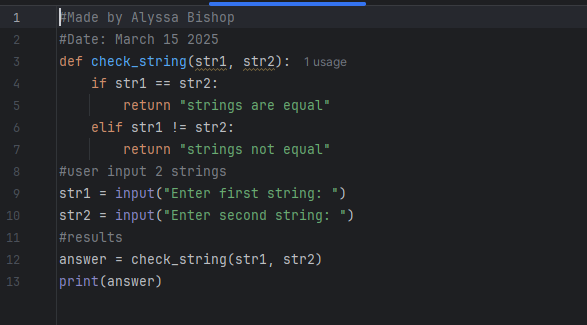
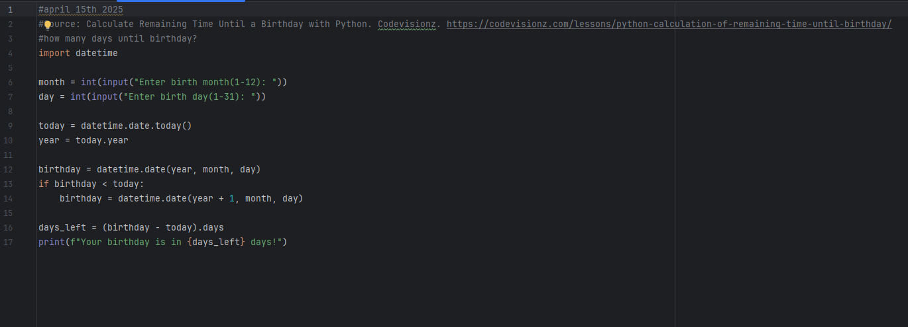

Below are top 5 python codes I have done this semester, I have added a few I made while learning and understanding the basics - as I have unfourtunately lost all files from before midterm.
This code draws a square using turtle, the size is based on input.

This code checks if two strings are equal. Beginning with operators and input.
Simple convertor made while learning math module, shows you can convert many different things

This code draws a pink stick figure using turtle, simple, but it helped understanding the way the cursor moves.

This code calculates how many days left until birthday after input
